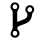

Coding is definitely not the only way you can contribute to GoCD. There are many valuable ways to contribute to the product and to help the growing GoCD community.
Test GoCD
You can report issues you find, or you can help us test GoCD to find new issues. You can also add to the existing automated tests.
Join Community Discussions
We have an active forum where issues, features and ideas are discussed. Start a discussion, or help someone get started with GoCD.
Blog about GoCD
Contribute to the blog. If you write about your personal experiences with using GoCD, we’d love to add them to the GoCD blog.
Code Contribution Process
-
 Decide what you want to build
Decide what you want to build
-  Fork the repository, keep it in sync with the master
- Talk to us about what you want to do
-
 Make your changes
Make your changes
-
 We merge your request
We merge your request
-
 Fill out the CLA Form
Fill out the CLA Form
- Submit a Pull Request
How to start contributing
Decide how you want to contribute: picking up an outstanding issue, adding a new feature, or building a plugin, etc. Looking for inspiration? Check out GoCD's Roadmap for a view into where the product is heading this year.
If your contribution is a code contribution and you do send us a pull request, you will first need to read and sign the Contributor License Agreement.
How to get help
If you need any help getting started or get stuck along the way, you can talk to us on Gitter or on the discussion forum. We are happy to help and answer any questions.